音频围绕需求编译、软件工程方法、智能体编程等内容展开，探讨了相关技术的应用、挑战及行业趋势，还介绍了教学实践和未来计划，内容如下：
林云把「软件工厂」从口号做成了可教、可测的课程实验：与斯坦福同期开课，让学生用「需求编译」复刻 12306 / 携程，GUI 通过率 96%、需求编译成功率近 100%。更可贵的是他诚实报告了「差评」——学生驾驭不了大模型生成的海量代码、调试无从下手，这些「心流被打断」的细节，比成功率更有信息量。
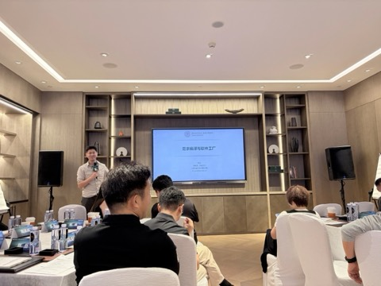
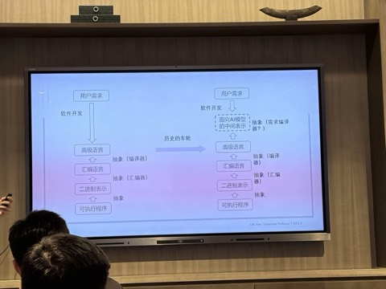
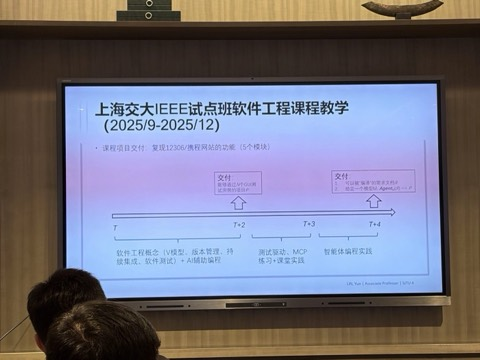
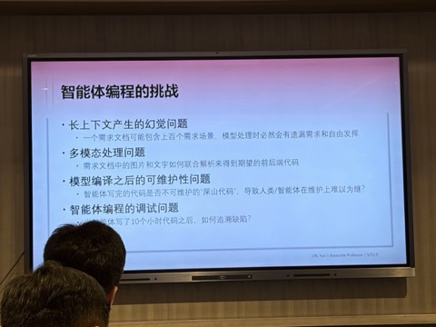
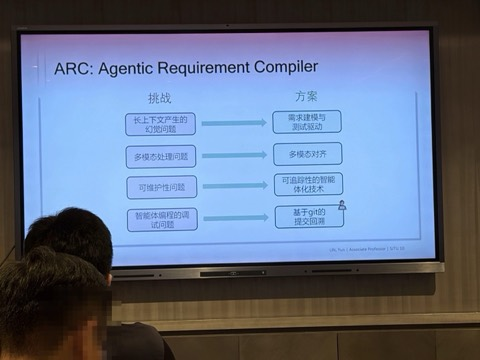
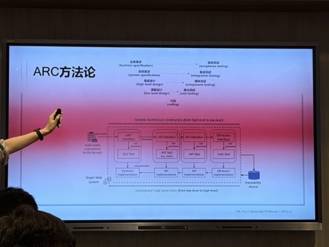
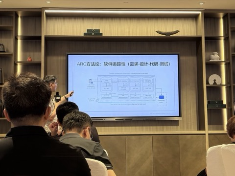
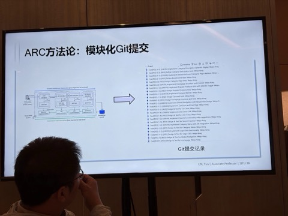
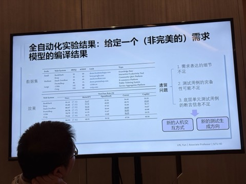
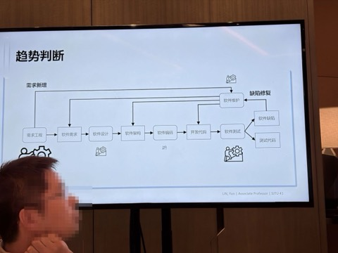
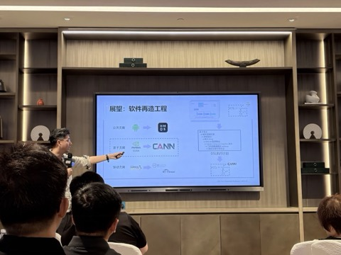
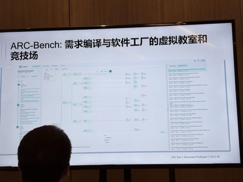
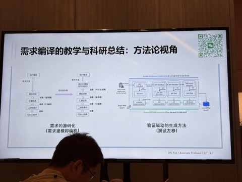
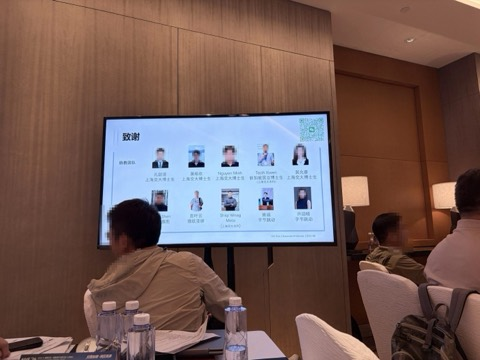